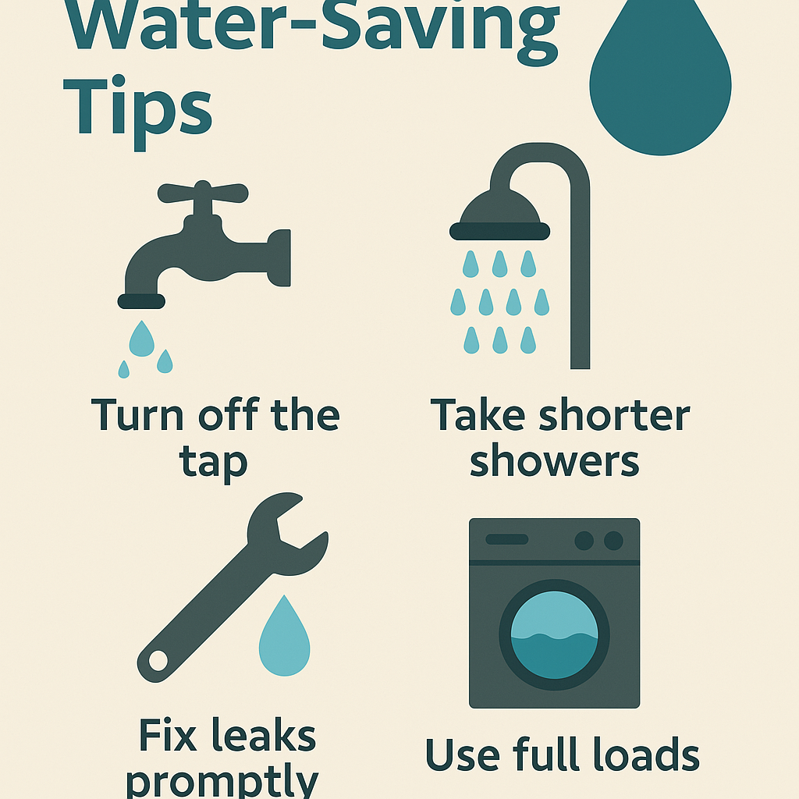
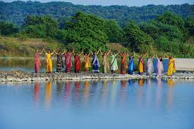

Water is a precious resource essential for all life forms. With increasing demand and pollution, it is crucial to conserve water. Simple steps like reducing waste, fixing leaks, and using water-efficient appliances help protect our water sources.
Conserving water can be easy. Some effective tips include turning off taps while brushing, using rainwater harvesting, and watering plants efficiently. Industries and households alike must adopt water-saving techniques to prevent scarcity.
Various global projects focus on water conservation, ensuring sustainable use and management of this vital resource. Organizations work on reducing pollution, improving irrigation systems, and implementing strict water policies.
| Project Name | Location | Details |
|---|---|---|
| Water.org Initiative | Global | Learn More |
| Rainwater Harvesting in India | India | Learn More |
| Save Our Water Campaign | USA | Learn More |
| UN Water Action Decade | Global | Learn More |
| Clean Water Project | Africa | Learn More |